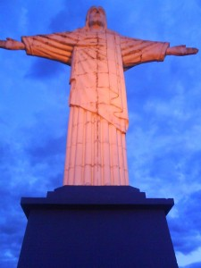

vamo, vamo, vamo…
Posts tagged fotos
Um ano da primeira prova de Alex e Claudio (comemorando em grande estilo)
287 years
by Alecão
in Ex-sedentário
Este é um post elaborado a quatro mãos (do Alex e do Claudio).

Faz 1 ano em que eu (Alex) aceitei participar da minha primeira corrida, na época a idéia partiu de mim e o Claudio pirou ao escutar a idéia. Naquela corrida corremos lado-a-lado e com certeza sem ele não teria completado a prova.
Desta vez a coisa foi diferente. Claudião se preparou para encarar a maratona de Curitiba e eu quis fazer um Deja-vu correndo novamente a Samsung 10K e desta vez sozinho.
Falando nisso, todas as corridas que eu participei, tive companhia e nessa em particular eu corri sozinho… Portanto, tive que contar muito com a for√ßa de vontade.
Escrevendo esta introdu√ß√£o fiquei imaginando como iria fazer um texto a quatro mãos, sendo que não estamos juntos. Então eu imaginei… Escrevo minha parte e depois o Claudio acrescenta a dele. E como fazer isso? A resposta √© colocando os horários e depois intercalando…

Deus! Escrever agora, emocionado, fica mais complicado.
A data realmente pedia uma comemoração especial. Afinal, um ano da primeira prova oficial depois de nossa resolução de parar de reclamar da má sorte/saúde e literalmente corrermos para o abraço de uma vida feliz!
Partamos então para a parte Parananense da comemoração, porque eu não comemorei sozinho em Curitiba, nosso idolo do Blog, o Thiago, esteve comigo na aventura. E que aventura:
21:45 (Claudio) РSábado 20.11. -Thiago e eu estamos na Rodoviária do Tiete, aguardando o horário de partida do ônibus que nos conduziria até Curitiba.

02:30 (Alex) РAcordei, sem sono, maldita ansiedade, tentei dormir novamente sem condições. Mesmo assim fiquei deitado na cama até o relógio tocá-se.
04:30 (Claudio) РDomingo 21.11 Р Thiago e eu somos acordados pela luz do ônibus, que anunciava a chegada à rodoviária de Curitiba.  Uma troca de roupas no banheiro da rodoviária e um café pré-corrida com torrada (seca) e gatorade.
05:00 (Alex) – Sa√≠ da cama e procurando roupa, vesti dei tchau para Andrea e sai pensando… Por que fui aceitar essa id√©ia???
05:00 (Claudio) РComo ainda faltavam duas horas para a corrida, decidimos caminhar até a largada. Afinal, só encontraríamos o Paulo Motta com os nossos kits ás 06:15. Mas devido a informações erradas acabamos indo na direção contrária. Eram 05:50 quando decidimos tomar um ônibus ou táxi para a largada, mas ônibus não passavam e os táxis que passavam, não paravam. Bateu-me desespero, mas finalmente um táxi parou e em 07 minutos nos deixou na arena da corrida.
06:10 (Alex) – Cheguei na Assembl√©ia legislativa, achei uma vaguinha do lado… Ufa, era minha maior preocupa√ß√£o. Já estava trocado. S√≥ faltava esperar.
06:35 (Claudio) РO Paulo Motta chega com os nossos kits. No mesmo momento também aparece a Dani Dato e o seu anônimo esposo, Vinicius (que também correu sua primeira prova longa) e Enio.

07:00 (Claudio) – Dada a largada Thiago, Paulo e eu ainda ainda estávamos procurando o acesso para a pista. E uma supresa. O Enio disse que correria comigo, que em razão de um problema ainda não curado na lombar correria apenas 10kms (disse isso para me enganar) do meu lado.
Apesar da sensacional e emocionante companhia do Enio foi bastante estranho correr os primeiros 5km em último lugar. Thiago e Paulo seguiam um pouco a frente.
07:30 (Alex) – E como esperei… andei para um lado, andei para outro. Fiquei procurando os conhecidos e nada. Desisti e fui para a largada. O meu setor (preto) era exatamente do lado do Trio el√©trico. No qual teve aquecimento, foi bem legal isso.


8:00 (Alex) – Largada!, come√ßou o anda-anda e liguei para o Claudio… Ele já estava correndo desde as 7:00. Desejei boa¬†sorte e ele a mim. Senti ali a presen√ßa dele e sabia que poderia encarar o desafio. Vamo embora! O in√≠cio √© pouco tumultuado comparado com o ano passado (bem pior). Encarar essa torcida do Cruzeiro não √© fácil (n√© Fábio? üôÇ ). Falando nisso o Fábio comentou do tumulto do in√≠cio… Saiba que no ano passado a coisa foi bem pior, porque os camisas brancas (caminhantes) estavam misturados a torcida do cruzeiro. Comecei bem com o r√≠timo de 7:30 por Km (primeiro e segundo quil√¥metros).


8:00 (Claudio) –¬†O telefone toca e era o Alecão dizendo que estava come√ßando a correr. Naquele momento já fiquei emocionado, era, enfim, o come√ßo da nossa comemora√ß√£o. Corrida vai, corrida segue, s√≥ encaixei¬†o passo e a respira√ß√£o por volta do km 11, quando já tinhamos passado por postos de hidrata√ß√£o bem bacanas.


8:30 (Alex) – Já estou no quarto quil√¥metro, passando do lado do Obelisco. A sombrinha das árvores acabaram (na¬†República¬†do L√≠bano). Fiquei com saudade da sombra… e já avistei a Rubem Berta… Lembrei que no ano passado, foi bem neste ponto que tive hiper-ventila√ß√£o. No ano passado o circuito era diferente, o Obelisco já era no quinto quil√¥metro. Bateu a lembran√ßa e tamb√©m já imaginei… Tem mais subida pelo caminho (era 1 Km a mais na Rubem Berta). Decidi que o objetivo era terminar e diminu√≠ o passo. Fiz o terceiro Km em 8:30 e o quarto a 9:00… Come√ßaram as subidas da Rubem Berta… socorro. “Anda Alex”, “Anda Alex” era a voz que vinha de dentro. Comecei a caminhar rápido. E não era s√≥ eu. Tinha muita gente partindo para a mesma id√©ia. Corria na descida e NOOOOSSA uma subida interminável e caminhei novamente. O quinto e o sexto quil√¥metro foram feitos a 10:00 cada.
9:00 (Alex) – S√©timo quil√¥metro, lembrei que no ano passado eu esbocei uma rea√ß√£o aqui. Encarei que iria recuperar o tempo das caminhadas… meta fixa na cabe√ßa… “Quero terminar em 1 hora e meia”. E fui correndo quando dava. Nessa hora vi que não era um dos últimos e comecei a ficar feliz… Não sou tão lerdo assim.


O S√©timo ainda tinha subidas e fiz com 9:00 e o oitavo e nono a 8:30 e apenas pensava… Vou conseguir, vou conseguir…
9:30 (Alex) – Estou no d√©cimo quil√¥metro e apareceram placas com “Faltam 800m”, “Faltam 600m”, “Faltam 400m” uma alegria geral foi tomando conta, sombra de árvores voltaram… Tirei o bon√©:
 Nessa hora, avistei um senhor já de idade dando um sprint e virando a curva. Não me aguentei e disparei, quase atropelei 3 mulheres que corriam lado a lado e fui a busca do senhor. Uhuuuuuu. Animal… (veja o v√≠deo da chegada)
Nessa hora, avistei um senhor já de idade dando um sprint e virando a curva. Não me aguentei e disparei, quase atropelei 3 mulheres que corriam lado a lado e fui a busca do senhor. Uhuuuuuu. Animal… (veja o v√≠deo da chegada)
Liguei para o Claudio… Gritei: “Claudio fiz em uma hora e vinte seis…” E escutei a vibra√ß√£o dele do outro lado da linha… Ele vibrava, “voc√™ foi muito bem…” e emendou “Estou no Km 21. A corrida pra mim come√ßa agora”. Fiquei muito emocionado nesse momento. Obrigadão Claudio, por estar comigo e vibrar comigo mesmo quando eu estou correndo sozinho. O tempo oficial marcou os mesmos 1:26:00 (arredondando).


Na sequ√™ncia liguei para a Mo√ßa (Andrea) que vibrou muito junto com as crian√ßas. Se no ano passado a frase que repeti no post foi “Consegui, Consegui, Consegui”…. A deste ano √© “Perseverei, Perseverei, Perseverei” e Vamo, vamo, vamo… Claudião continua agora…
9:30 (Claudio) –¬†O¬†telefone toca novamente. Era o¬†Alecão¬†ainda ofegante dizendo que havia terminado a prova em 01h26min. Fui tomado por uma¬†emo√ß√£o tão grande que eu berrava¬†muito alto na rua.¬†Comecei a¬†chorar e o Enio, sempre comigo,¬†¬†lembrou-me de ¬†que ainda¬†tinhamos 21 kms pela frente.¬†Foi inevitável¬†não acelerar naquela hora. A primeira parte¬†da prova foi muito linda (sem cansa√ßo¬†a paisagem fica mais agradável)¬†Havia árvores cujas flores pareciam girass√≥is.

10:30 (Claudio) РO sol aparece com todo seu explendor. No km 28, aproximadamente uma caminhada rápida na subida, seguida de um trote contínuo até o km 31, a partir de onde as caminhadas ficaram recorrentes, mas firmes. Passamos pelo Thiago já voltando embalado e logo em seguida pelo Paulo Motta. Num dado momento eu estou caminhando sem ritmo e decido bater palmas para ditar o ritmo da caminhada, o que ajudou bastante porque a caminhada virava corrida muitas vezes.

A esta altura eu já sabia que atingiria meu objetivo de completar a maratona em bom estado físico e dentro do tempo regumentar. Já fazia alguma festa, mas sem dispensar nenhuma ajuda oferecida pela estrutura da prova.


Depois do km 36 o Enio tentava arrancar de mim um corredor forte, mas única coisa forte que encontrava era caminhada (menos mal). E, de quando em vez, um trote.

Caminhando e trotando eu cometi uma heresia em maratona. Parei na placa de 40km, quando todos ganham força e aceleram, mas acheia-a tão linda. Afinal, eu nunca havia sequer visto uma placa de 4okm, assim, tão  de perto.


Depois dessa placa eu queria chegar logo, mas as penas não respondiam ao comando da ansiedade, o que resultada em tiros de 25 metros seguidas de caminhadas de 200. O Enio me apontava o pórtico da chegada, mas ele estava muito longe e no alto de uma subida. O Paulo Motta já tinha voltado para me rebocar e seguimos os três, mas sprint mesmo somente nos ultimos 100 metros. Eu ainda consegui fazer uma graça. Parei diante do tapete e pulei em cada faixa (três) com os pés juntos.
Eu havia completado a prova. E no maravilhoso tempo de 05H21Min01Seg.
O Paulo Motta, que no mês de agosto me presenteou com a inscrição da corrida e todo incentivo de três meses, deu-me um caloroso abraço. Nessa hora eu me emocionei. Delícia que eu desejava experimentar há muito tempo. E eu gostei disso. Eu fiz uma loucura planejada e em, apartado, farei um post especial para agradecer a todos que me incentivaram e que me foram decisivos na fase destinada a preparar meu corpo para suportar a brincadeira.
O Enio foi sensacional. Sacrificou a corrida dele para estar comigo durante todo o tempo, incentivando-me sempre e vibrando comigo. Jamais esquecerei isto meu amigo. Devo-lhe um rim.
E o Thiago? Este terminnou voando e o perdemos. Depois que o encontramos que ele esclareceu que após um descanso foi nos esperar na chegada, quando já havíamos passado. Liguei para a Mari e, lógico, para o Alecão, o fecho de nossa especial comemoração.
Mas a maratona da viagem ainda não havia terminado. Conheci o veloz Baleias Tinil, que me recebeu de braços e coração abertos. Um verdadeira festa Baleias.

Quando encontramos o Thiago,  vimos novamente Tinil, desta vez acompanhado do divertidíssimo Julio Cordeiro. E já rolou ali mesmo uma comemoração com Gatorade Espumante, como chamou o Julio, em seu blog.
Não posso deixar de comentar que Thiago e eu tomamos banho no chuveiro fornecido pela organização da prova. Num container.  Um monte de magricelas pelados.  Senti-me uma panceta no meio do charque. Inusitado, para dizer o mínimo. Mas aquela altura TUDO ERA FESTA.
O Paulo até adiou a ida dele ao amigo que o hospedava, para ficar para o almoço/cervejada, que contou com a presença também do Ésio Cursino.

Thiago e eu saimos as pressas para a rodoviária. Eu estava muito feliz e ligeiramente bêbado, o que tornou tudo mais divertido. Assim que o ônibus partiu fui ao banheiro e nas ultimas 6 poltronas haviam maratonistas (legítimos). Fiquei ainda quase duas horas em pé no corredor do ônibus proseando. A sensação era de que o ônibus se deslocava para frente e girando ao mesmo tempo no próprio eixo.
A nossa comemoração de um ano foi sensacional. Justo durante o período em que me dediquei aos treinos longos e a dieta (tive de perder 8 quilos que estavam atrapalhando muito), o Alecão também se superou, E MUITO, vencendo barreiras quase intransponíveis para fazer bonito na equipe Taeq durante a Maratona de Revezamento Pão de Açucar. Emagreceu 12 quilos e fez uma lindeza de prova comemorativa. Diminuiu vinte minutos daquela prova e com um fantástico sprint.
O Alex √© o meu her√≥i e parceiro de toda uma exist√™ncia.¬†√â tamb√©m o Her√≥i deste blog, porque segue feliz e aceitando suas limita√ß√µes mesmo tendo no encal√ßo o mala do Claudião. Mas sempre contando tamb√©m com Thiago, nosso √≠dolo, incentivador e parceiro at√© nas roubadas mais incr√≠veis, como este bate-e-volta para Curitiba. Valeu Thiagão!!!! Cad√™ o Guilherme Maio? Gui, eu tamb√©m tenho meu “mestre Thiago”.
(Alex) E tudo começou assim:

Nosso Pedro
87 years
by Alecão
in Ex-sedentário
 E M O C I O N A N T E
E M O C I O N A N T E
Esta é a palavra que define a superação.
Parabéns Sr. Pedro.
E parabéns a todos aqueles que superaram seus limites como eu!

Papai conseguiu
07 years
by Alecão
in Ex-sedentário
Ainda estou em euforia, muito bom para o ego saber que consegui completar o percurso, inteiro. Tinha planejado fazer a minha perna em um tempo de 45 à 50 minutos. Mas no calor da empolgação, acabei entregando a pulseira para o Cezar aos 43 minutos.
Como fui o sexto, tive que aguentar bastante a ansiedade. Cheguei bem cedo, as 6:40 no local combinado e somente por volta da 10:10 eu comecei a correr, quando a Marina passou a pulseira para mim. Nesse tempo todo de espera, deu vontade de mijar, fui, voltei, conversei com a Marisa e o Wiliam. Parece uma eternidade. Mas os 40 minutos da corrida, passam muito rápido, quanta diferença.
Muito interessante o esquema do revezamento. A questão de torcer e vibrar com o tempo que cada um da equipe faz. SMS pra cá, ligação de voz pra lá, com certeza o celular é um acessório indispensável para corridas deste tipo. Mas a maior emoção é mesmo a passagem da pulseira. Eu até dei um sprint ao passar a pulseira para o Cezar.
Depois desta festa toda, não vejo a hora de ir correndo para casa e encontrar meus filhos e dizer “Papai conseguiu” e principalmente dar um abra√ß√£o na Andrea (minha mo√ßa) que sofreu comigo e me deu muita for√ßa nesta vit√≥ria.


Super Equipe
07 years
by Alecão
in Ex-sedentário
") Esta quarta reunimos a Equipe TAEQ e pude conhecer pessoalmente aqueles com quais eu estarei revezando no dia da maratona. Foi sensacional encontrar pessoas alegres e entusiasmadas com o evento. É a certeza de que no domingo da maratona terei mais que uma superação pessoal, terei o prazer de ajudar um grupo.
Esta quarta reunimos a Equipe TAEQ e pude conhecer pessoalmente aqueles com quais eu estarei revezando no dia da maratona. Foi sensacional encontrar pessoas alegres e entusiasmadas com o evento. É a certeza de que no domingo da maratona terei mais que uma superação pessoal, terei o prazer de ajudar um grupo.
Interessante ver tamb√©m como o grupo √© heterog√™neo e como a corrida coloca pessoas diferentes dentro do mesmo “buraco”.
A ordem do revezamento foi estabelecida e eu fiquei com a sexta perna. Vou ter que passar bastante protetor solar por conta do sol.
Não vejo a hora da maratona chegar.
Não achei o Thiago
47 years
by Alecão
in Ex-sedentário
Estivemos eu e família na meia maratona de SBC. Procurei o Thiago mas não achei. :~(
.jpg "IMG_7301 (1024x768)")
.jpg "IMG_7302 (768x1024)")
.jpg "IMG_7303 (1024x768)")
.jpg "IMG_7304 (1024x768)")
.jpg "IMG_7305 (768x1024)")
.jpg "IMG_7306 (1024x768)")
.jpg "IMG_7307 (1024x768)")
.jpg "IMG_7308 (1024x768)")
.jpg "IMG_7309 (1024x768)")
.jpg "IMG_7310 (1024x768)")
.jpg "IMG_7311 (1024x768)")
.jpg "IMG_7312 (1024x768)")
.jpg "IMG_7313 (1024x768)")
.jpg "IMG_7314 (1024x768)")
.jpg "IMG_7315 (1024x768)")
Mais fotos da família deste dia no outro blog.

5º Desafio da Mata Atlântica Р2ª Parte
97 years
by Claudião
in Ex-sedentário
Quem estiver chegando agora, não deixe de ver o post anterior, onde há a impressão do Alex e as fotos, cuja maioria completa o sentido das que postarei agora.
Antes de tudo, parabenizo o meu grande parceiro Alecão, que com gripe e tudo mandou ver na Serra. Sua caminhada foi 10 e o seu espírito 1000. Com você foi tudo mais mágico, primão: eu te amo!
O dia não poderia ter sido mais especial. Durante a semana eu ameacei várias vezes vir aqui chorar a minha fraquesa e os quilos que só fazem aumentar. Mas em vez disso eu decidi sorrir na Serra.
A prova foi maravilhosa, com uma organização muito boa, diante de toda a logística envolvida. Desce-e-sobe de atletas e volumes, tudo pela Rodovia Anchieta. Sobe-e-desce de motoqueiros, pela própria pista, atentos e dipostos a ajudar a quem precisasse. Sou só elogios.


Muitos já foram os comentários. Todos efusivos que me deixam muito emocionado. Não tenho palavras para expressar a felicidade que sinto por tanto carinho e considera√ß√£o com quem não tem o corpo de atleta amador. Sinto-me honrado pelo reconhecimento do “amador” que sou da atividade, interatividade e festividade com algo que √© realmente bom. O corredor amigo que há muito nos acompanha no blog, Sandro Guedes, foi logo comentado sobre o nosso incentivo a galera. Valeu Sandro!!!!
Na prova, fomos nós mesmos, brincalhões. Atazanamos a todos. E o sorriso de aprovação não tem preço. Eu desejo muito que as pessoas que conhecemos venham até aqui resgatar as imagens e principalmente receber nosso caloroso abraço e consideração.
O Enio, coitado, foi pego no la√ßo pelo Baleia Mor – Miguel Delgado – e preso com peia firme. E não ratiou, gostou at√©. O cara √© um Santo. Já √© amigo, viu. Sorte ou sina? O tempo lhe dir√°… Se eu já sonhava maratonar por a√≠, sua hist√≥ria, incentivo e disposi√ß√£o para ajudar/participar, s√≥ fizeram aumentar esse sonho. Eu vou diminuir minhas reca√≠das, vou parar de aparecer mais gordo e mais magro em cada fotografia, e vou no caminho certo. Não foi apenas um encontro de Ex-Sedentários Baleias com integrante Baleia. Foi uma jun√ß√£o mesmo de amizade muito bacana. Valeu Miguel!


Sobre as pessoas da prova. Muitas me marcaram. Eu não sou sensitivo nem nada que o valha. Mas quando o Sr. Ítalo aproximou de mim com aquele sorrisão, senti uma energia muito forte, muito positiva. Senti como se meu pai tivesse aparecido ali. Senhor de 70 anos, com uma felicidade incrível fazendo aquele maravilhoso passeio junto do Filho, Ricardo, celebração pura. Além dele, inesquecível a imagem da Senhora Rosana. A felicidade dela se aproximando da chegada foi espetacular. São as duas imagens de força e felicidade que eu registrei para mim, e em fotografias (tomara que eles as encontrem por aqui).


Além deles houve as pessoas como nós, que se divertiram conosco e nos acolheram com a primeira olhada. Nas fotos se vê os Dundes (Claudio e Alex) e o Duendes da Serra. As Garotas Super Cor-de-Rosas, super simpáticas e super atletas, da equipe Lamartine: Heleni, Solange e Rosa. Eu espero vê-las muitas outras vezes.


Tirei muitas fotos bonitas do Cesar Conforti, que subiu decidido todo o percurso não demorando para deixar-nos para trás. Parabéns a você e a Helga (as fotos de vocês ficaram legais demais).


Outro abraço para a Vanessa e Luciana, troca de máquinas, fotos e poses e muitos sorrisos. Enfim, foi tudo muito maravilhoso e com certeza estou cometendo o grave pecado do esquecimento. Perdoem-me os não citados. Ah, engraçada demais a cena da Tomiko entre mim e o Alecão. Ela virou um cisquinho.
Mais uma vez agradeço ao trabalho técnico do Alecão que cuidou de todas as fotografias aqui.


.jpg "5-desafio-mata-atlantica")
5º Desafio da Mata Atlântica
127 years
by Alecão
in Ex-sedentário
Estava gripado e sem coragem de ir, mas o Thiago me incentivou e o Claudio tamb√©m. E fui. Não me arrependi, foi maravilhoso mesmo com a gripe piorando quando cheguei em casa (tive muitas dores, nausea, ansia e febre), mas nada que um analg√©sico e 4 horas de soneca não resolvessem. To com gostinho de quero mais…
Nesta prova tivemos a oportunidade de conhecer o Enio integrante dos Baleias, muito bacana, gostei mesmo dele, nos incentivou bastante.
Sem mais enrola√ß√£o, estou colocando as fotos que tiramos… São mais de 200 e tem mais para colocar, volte depois e olhe as fotos novas. Tem v√≠deo tamb√©m que ainda estou editando e colocarei em outro post.
Eu corro, paro e volto a correr. O trem também!
98 years
by Claudião
in Ex-sedentário
Eu trotei por 40 minutos. Das 06:10 às 06:50. Banho rápido e não deu tempo de tomar café. Eu tinha de tomar o trem logo para chegar no escritório.
Mas o trem falhou. Os onze minutos dos quais tanto me vanglorio para chegar no metrô Barra Funda viraram 41 minutos. São 4 estações (Pirituba-Lapa-ÁguaBranca-BarraFunda). Na Lapa, a supresa. Tivemos todos de descer do trem. Em bloco compactado nos dirigirmos para a plataforma contrária passando pela passarela. O povo ficou louco. Todos esbravejavam e reclamavam do trem. Um aperto medonho. Desde novembro de 2000 é a primeira vez que isto acontece. Por que a galera estressou tanto? Lógico que estaria puto se tivesse atrasado para reunião. Mas o trem em si, não merecia tantos impropérios.
Eu aderi à multidão que tira foto da desgraça com celular. Mas hoje eu estava feliz e não via a fatalidade como desgraça. Até fiz um novo amigo, o Roger, com quem tirei foto quando as coisas se ajeitaram.
O trem corre, são apenas 11 minutos para fazer o trajeto. Hoje, parou, mas logo continuou na corrida de que todos esperavam. E o meu bom humor devia mesmo a minha felicidade de ter me reencontrado na corrida depois de ter parado. Parei mas continuo na corrida que me levará a ter o sono perfeito, pra sempre!


reCOMEÇEI!!
88 years
by Claudião
in Ex-sedentário
Sexta-feira,28.05.2010, eu trouxe a roupa de corrida para o escritório. Mas nem por isso me empolguei demais. Foi um trotezinho da Av. Paulista com Augusta (caminhei do escritório até lá com o meu amigo do escritório) que não passou da Heitor Penteado. Vinte e dois minutos de trote mais uma caminhada de 10 Minutos. Somando com os vinte minutos do treino que havia feito de manhã, penso que foi muito bom.
Sábado, 29.05.2010, o famoso faça que eu digo e não que eu faço. Cometi o que eu mesmo denomino de heresia. A esposa esquematizou o final de semana numa unidade recreativa da associação da qual ela é sócia (afpesp) na cidade de Amparo. (Ela cuidou de tudo, reserva, pagamento, as malas e até a checagem do carro).
A Heresia foi que no meio do mato, natureza, e o treino que fiz, de 40 minutos, foi na esteira elétrica. Logo eu nem em chuva largo a rua em São Paulo.
A desculpa foi pelo fato de só ter conseguido um tempinho quando dia acabou, pelo menos a luz solar (18:00). Eu só tinha o tempo suficiente para o Banho da esposa e filho. Frio e escuro e pouco tempo, foi conveniente, mas uma heresia do mesmo modo. Treinei, de leve, já pensando no domingo.
Domingo, 29.05.2010, 05:33 horas, eu passei pela porta do hotel (não se chama assim, mas não lembro o certo) e sete minutos de caminhada ladeira abaixo até o portão (o lugar fica num morro entre Amparo e Monte Alegre do Sul) cheguei na Rodovia. Eram 05:40 e noite como nunca.
Fazia mais frio do que supunha e me acorvadei de tentar de me aventurar no caminho para Serra Negra, (sem acostamento nenhum e aquele breu). Se bem que havia lua, dava até para ver minha sombra no asfato, mas tinha de seguir atento com os carros que vinham, ja que eu estava na contramão e na pista.
Fui em direção de Amparo mesmo (pertinho). Embora o espírito quisesse não daria para ser um treino muito longo. Fiz a escolha certa, porque só clareou de vez as 06:40 horas. Bem antes de chegar a Amparo já havia iluminação na rodovia, eu corria por ela na contramão. Meia hora de corrida eu já chegava na cidade.
De longe avistei um Cristo no Alto de um morro e fixei-o como destino. Eu gostaria de ter subido o cume do Cristo sem andar, mas só com muito treino. Mas deu para tirar uma foto do Cristo ainda suado. Um gel, água e caminho de volta. De corrida ininterrupta foram 50 minutos, mais descanso, corrida e caminhada intercalada até o Hotel. Eu não forcei porque não queria que um cansaço do treino prejudicasse o dia do filhão.
Aliás, fiz muito bem em pegar leve. O dia todo foi de muita atividade. Prometi que botaria o filho a nocaute antes das 16:00 horas. Que nada, essa molecada tem uma energia inesgotável. Dei tudo de mim e às 18:00 pedi arrego. Que inveja do Henrique dormindo de roncar durante a viagem de volta e eu, lá, acabadão.
Um final de semana para lá de especial. Correndo de verdade e curtindo a família num lugar bonito.

Estava clareando quando cheguei no topo. Mil metros de rampa íngreme, em paralelepípedo.

Ainda bem que era Cristo, outro não perdoaria esta cara gorda na frente.
Fotos da Maratona
58 years
Pois √© galera estão ai as fotos, fui pego caminhando üòÄ


Agora tem o v√≠deo da chegada üòÄ
.jpg "DSC01779 (1024x576)")
.jpg "DSC01895 (576x1024)")


{kind=link}
{kind=link}
{kind=link}
{kind=link}
{kind=link}
{kind=link}
{kind=link}
{kind=link}
{kind=link}
{kind=link}
{kind=link}
{kind=link}
{kind=link}
{kind=link}
{kind=link}
{kind=link}
{kind=link}
{kind=link}
{kind=link}
{kind=link}
{kind=link}
{kind=link}
{kind=link}
{kind=link}
{kind=link}
{kind=link}
{kind=link}
{kind=link}
{kind=link}
√öltimos comentários